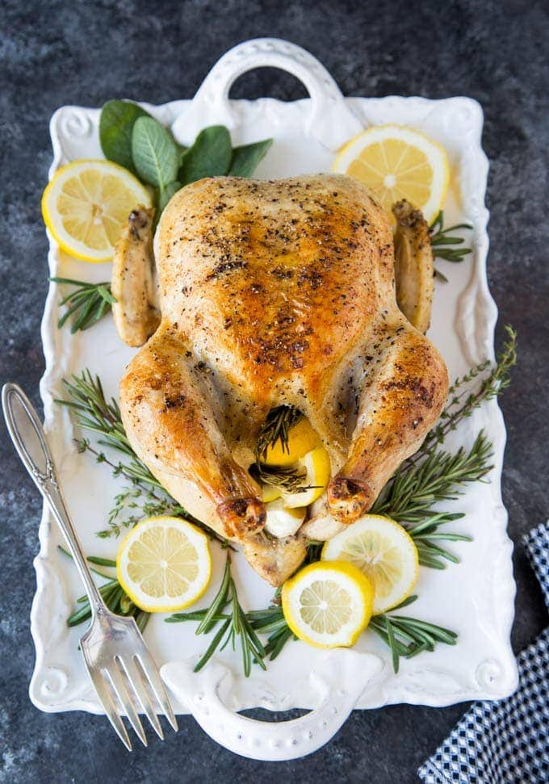

Roast Chicken with Lemon

Roasted chicken with preserved lemon, butter and garlic.
Ingredients
- 70g unsalted butter
- 3 tbsp thyme leaves
- 3 garlic cloves
- 1 small preserved lemon
- 1 lemon
- 1 whole chicken (1.5kg)
- salt and black pepper
Steps
- Preheat the oven to 190c fan
- Add butter, thyme, garlic, preserved lemon, salt and pepper to a food processor and blitz to combine
- Spread butter mixture over chicken and under skin.
- Place chicken in high sided baking tray. Drizzle with lemon juice and sprinkle with more salt and pepper.
- Roast for approx 70 mins, basting every 20 mins or so.
- Remove from the oven and allow to rest for 10 mins.
Recipe taken from Simple by Yotam Ottolenghi.
Back to Recipes